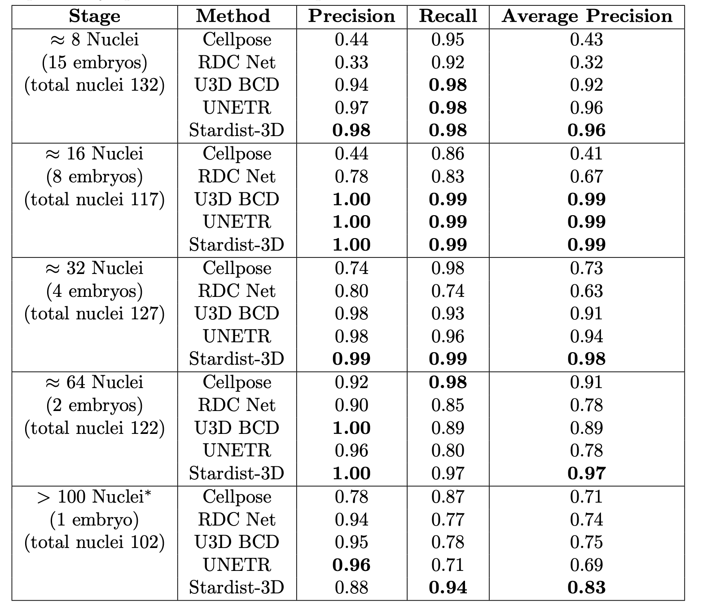

BlastoSPIM models page.
| Early stage 3D Stardist model (8 to 64 nuclei). | Late stage 3D Stardist model (64 to 128 nuclei). |
|---|
We evaluated five neural network architectures to determine how to obtain the best instance segmentation on our dataset.
Fig 1. Segmentation tasks applied to images of a pastoral scene [1] and of a mouse embryo. (A) Raw image to be segmented. From top to bottom, an image of cows in a pasture, maximum intensity projections of 3D image of 16-cell mouse embryo, a z-slice from the 3D image. 3D image has dimensions (83.4 μm, 83.4 μm, 68 μm). Scale bar: 10 μm. (B) Semantic segmentation for images in (A). (C) Object detection for images in (A). (D) Instance segmentation for images in (A).
The results of the evaluation are summarized in the table below.
Table 1. Performance Results on High SNR Images Per Developmental Stage for 5 Methods. Each network was trained on 482 3D images, and was subsequently applied to a test set of high SNR images (x images, xx nuclei). For 8-cell to 64-cell stages model hyperparameters were not adjusted. For the latest stage (> 100-cell), the probability threshold – used to define instances – was tuned to independently optimize each method’s performance.
The model with the best performance was 3D Stardist https://arxiv.org/abs/1908.03636.